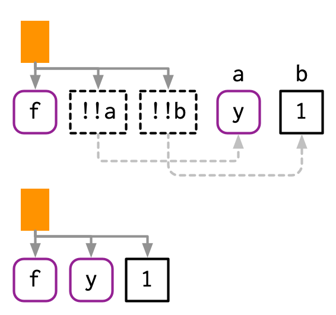
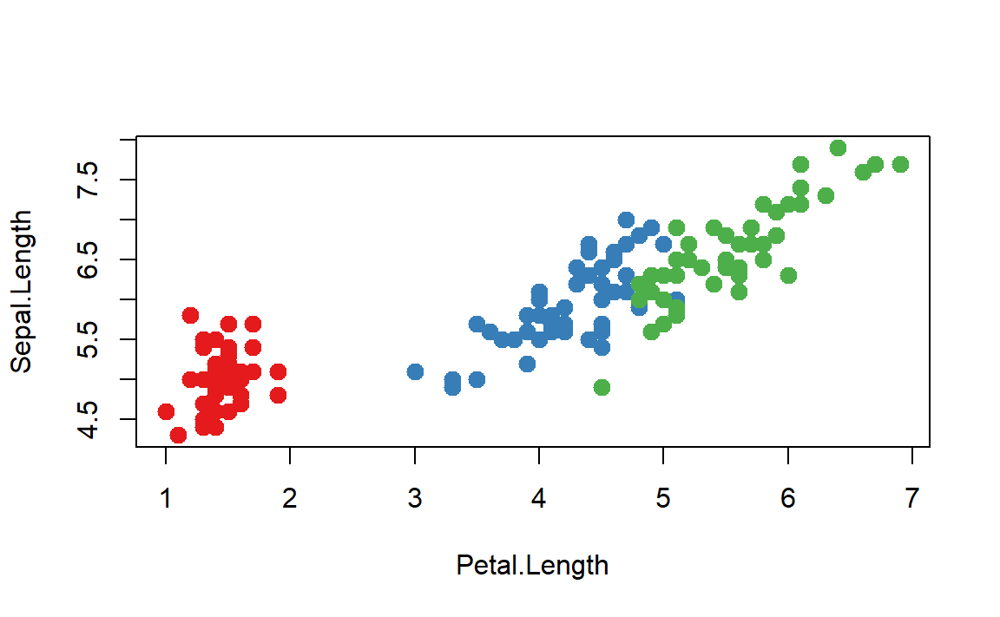
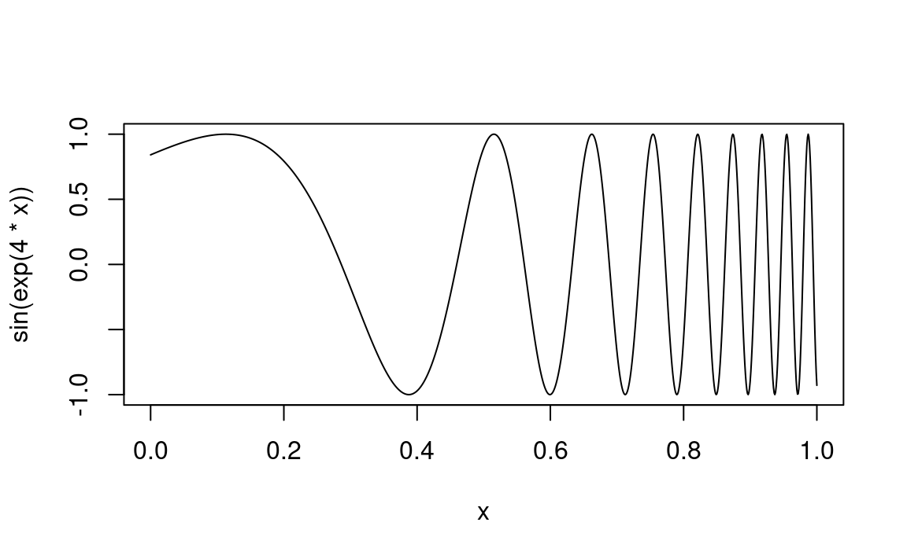

library(rlang)
library(purrr)
#>
#> Attaching package: 'purrr'
#> The following objects are masked from 'package:rlang':
#>
#> %@%, flatten, flatten_chr, flatten_dbl, flatten_int,
#> flatten_lgl, flatten_raw, invoke, splice19 Quasiquotation
Introduction
准引用（quasiquotation）包括两部分——引用和解引用，引用就是我们上章介绍过的捕获“表达式”，解引用相当于“评估”“表达式”。但是要注意，解引用函数只在引用函数内有效，它的目的是“评估”要捕获的“表达式”中的部分元素。准引用使得组合“函数创建者的函数”与“函数使用者的函数”更加容易。
准引用是组成tidy-evaluation的三大基石之一（quosures和data-mask将在下章介绍），在tidy-evaluation中，所有支持引用的函数都支持解引用。
Outline
- 19.2节：通过一个示例函数——
cement()介绍为什么使用准引用。 - 19.3节：介绍引用函数。
- 19.4节：介绍解引用函数。
- 19.5节：讨论base R中类似的“解引用”。
- 19.6节：介绍使用
!!!的另外两种情况。 - 19.7节：介绍一些示例。
Prerequisites
需要熟悉第17，18章的内容。
Motivation
我们将从一个具体的例子开始，激发准引用的使用需求。假设你要创建一个类似paste()的函数：
paste("Good", "morning", "Hadley")
#> [1] "Good morning Hadley"
paste("Good", "afternoon", "Alice")
#> [1] "Good afternoon Alice"如果你厌倦了每次都输入引号““”，那么你可以创建下面的函数（后续会详细介绍如何使用）：
cement <- function(...) {
args <- ensyms(...)
paste(purrr::map(args, as_string), collapse = " ")
}
cement(Good, morning, Hadley)
#> [1] "Good morning Hadley"
cement(Good, afternoon, Alice)
#> [1] "Good afternoon Alice"上面的函数使得我们无需在每个字符两边添加引号，但它有个问题是：当我们使用变量指代字符时，它无法识别变量。paste()函数则可以正常识别
name <- "Hadley"
time <- "morning"
cement(Good, time, name)
#> [1] "Good time name"
paste("Good", time, name)
#> [1] "Good morning Hadley"我们可以使用特殊的解引符号!!处理上面这种情况：
cement(Good, !!time, !!name)
#> [1] "Good morning Hadley"
Note
上面的示例可能具有误导性。前面我们讲到过，常量的“表达式”就是常量，所以"Hadley"等价于expr("Hadley")，!!始终作用的是一个“表达式”，并且它会被传入到ensyms()中，也即解引函数始终在引用函数内生效。
引用函数ensyms()的返回值是一个表达式，我们可以对他进行“评估”或as_string()，但这些都已经不属于准引用的范畴了。
Vocabulary
“引用”与“评估”参数之间的不同是重要的：
- 一个被评估的参数遵循R的常规评估规则。
- 一个被引用的参数被保存为表达式，遵循自定义的处理规则。
上面的paste()的参数被评估，cement()的参数被引用。
如果你不确定一个参数是被评估还是被引用，你可以在函数外面的环境中允许这个参数，如果报错，那么这个参数被引用。例如：
# works
library(MASS)
# fails
MASS
#> Error: object 'MASS' not foundQuoting
准引用的第一个部分是引用——捕获表达式但不进行评估。引用相关的函数通常是成对出现，因为要考虑直接引用和间接引用（函数中的惰性评估）。本节首先介绍“rlang”中的引用函数，然后介绍base R中的。
Capturing expressions
捕获表达式的函数有四个：
| 单个引用 | 多个引用 | |
|---|---|---|
| 交互场景 | expr() |
exprs() |
| 函数场景 | enexpr() |
enexprs() |
在交互场景下，expr()和exprs()都直接捕获它们的参数，前者捕获单个参数，后者捕获多个参数。
expr(x + y)
#> x + y
expr(1 / 2 / 3)
#> 1/2/3
exprs(x = x^2, y = y^3, z = z^4)
#> $x
#> x^2
#>
#> $y
#> y^3
#>
#> $z
#> z^4
# shorthand for
# list(x = expr(x ^ 2), y = expr(y ^ 3), z = expr(z ^ 4))在函数场景下，因为惰性评估的原因，需要使用额外的函数enexpr()和enexprs()。
# expr 直接捕获参数
f1 <- function(x) expr(x)
f1(a + b + c)
#> x
# exprs 捕获函数的参数评估后的结果
f2 <- function(x) enexpr(x)
f2(a + b + c)
#> a + b + c捕获特殊参数...的结果只能使用enexprs()。
f <- function(...) enexprs(...)
f(x = 1, y = 10 * z)
#> $x
#> [1] 1
#>
#> $y
#> 10 * zCapturing symbols
ensym()和ensyms()函数是enexpr()和enexprs()的变体，专门用于捕获符号或将字符串转换为符号，输入不符合时会报错。
f <- function(...) ensyms(...)
f(x)
#> [[1]]
#> x
f("x")
#> [[1]]
#> xWith base R
上述讲到的函数在base R中都有对应的等价函数，它们之间的主要不同是base R中的函数不支持解引用。
| base R | rlang |
|---|---|
quote() |
expr() |
alist() |
exprs() |
substitute() |
enexpr() |
as.list(substitute(...())) |
enexprs() |
quote(x + y)
#> x + y
alist(x = 1, y = x + 2)
#> $x
#> [1] 1
#>
#> $y
#> x + 2
f3 <- function(x) substitute(x)
f3(x + y)
#> x + y
f <- function(...) as.list(substitute(...()))
f(x = 1, y = 10 * z)
#> $x
#> [1] 1
#>
#> $y
#> 10 * z除此之外，base R中还有两个重要的引用函数：
bquote()：提供了有限的准引用形式，将在19.5节中讨论。~：能够捕获环境的引用函数，将在20.3.4中讨论。
Substitution
substitute()函数除了执行“引用”的功能外，还执行“替换”的功能。
f4 <- function(x) substitute(x * 2)
f4(a + b + c)
#> (a + b + c) * 2如果你在交互场景中使用它的“替换”功能时，推荐添加第二个参数来指定哪些是要替换的。
substitute(x * y * z, list(x = 10, y = quote(a + b)))
#> 10 * (a + b) * zSummary
在使用引用功能时，你始终要注意两点：
要引用的对象是固定（交互场景）还是不固定的（函数场景）。
要引用单个还是多个。
| Developer | User | |
|---|---|---|
| One | expr() |
enexpr() |
| Many | exprs() |
enexprs() |
| Developer | User | |
|---|---|---|
| One | quote() |
substitute() |
| Many | alist() |
as.list(substitute(...())) |
Unquoting
解引用允你许选择性地评估“表达式”中的部分内容，其余仍然被引用。这样，你可以使用一个AST模板去生成其他AST。base R需要使用另外的技术来实现，我们将在19.5中介绍。
与解引用类似的是eval()函数（20章），但他们是不同的，解引用在引用函数内使用——expr(!!x)，评估实在函数外使用——eval(expr(x))，它们最终的结果也可能不同。
Unquoting one argument
!!会“评估”一个“表达式”，并返回的值插入到整体的“表达式”中：
x <- expr(-1)
expr(f(!!x, y))
#> f(-1, y)下面是!!运行的底层逻辑示例图：

!!当然也可以作用于符号或常量：
a <- sym("y")
b <- 1
expr(f(!!a, !!b))
#> f(y, 1)
!!作用于返回“表达式”的函数：
mean_rm <- function(var) {
var <- ensym(var)
expr(mean(!!var, na.rm = TRUE))
}
expr(!!mean_rm(x) + !!mean_rm(y))
#> mean(x, na.rm = TRUE) + mean(y, na.rm = TRUE)!!会保留操作符的优先级：
x1 <- expr(x + 1)
x2 <- expr(x + 2)
expr(!!x1 / !!x2)
#> (x + 1)/(x + 2)
如果我们只是简单地将表达式的文本粘贴在一起，我们最终会得到x + 1 / x + 2，这是完全不同的AST:

Unquoting a function
通常!!用来解引用参数，但是!!也可以用来解引用函数。需要注意的是expr(!!f(x))解引用的是f(x)，需要使用额外的括号表示解引函数——expr((!!f)(x))。
f <- expr(foo)
expr((!!f)(x, y))
#> foo(x, y)函数f来自于包的写法也可以：
f <- expr(pkg::foo)
expr((!!f)(x, y))
#> pkg::foo(x, y)
上面的代码也可以使用rlang::call2()改写：
f <- expr(pkg::foo)
call2(f, expr(x), expr(y))
#> pkg::foo(x, y)Unquoting a missing argument
在极少数情况下，我们需要解引用缺失值参数（missing argument），但直接解引用会失效：
arg <- missing_arg()
expr(foo(!!arg, !!arg))
#> Error: argument "arg" is missing, with no default我们需要使用rlang::maybe_missing()来处理缺失值参数：
expr(foo(!!maybe_missing(arg), !!maybe_missing(arg)))
#> foo(, )Unquoting in special forms
某些函数的infix形式的解引用会失败，例如$：它必须始终跟随变量名称，而不是其他表达式，强制使用会报错：
x <- expr(x)
expr(df$!!x)
#> Error in parse(text = input): <text>:2:9: unexpected '!'
#> 1: x <- expr(x)
#> 2: expr(df$!
#> ^需要将函数转变为prefix形式：
x <- expr(x)
expr(`$`(df, !!x))
#> df$xUnquoting many arguments
!!是一对一地解引用，!!!是一对多的解引用。可以是“表达式”列表或带name属性的向量和列表。
xs <- exprs(1, a, -b)
expr(f(!!!xs, y))
#> f(1, a, -b, y)
# Or with names
ys <- set_names(xs, c("a", "b", "c"))
expr(f(!!!ys, d = 4))
#> f(a = 1, b = a, c = -b, d = 4)
!!!也可以应用在call2()中：
call2("f", !!!xs, expr(y))
#> f(1, a, -b, y)The polite fiction of !!
!!和!!!与R中的类似+,-,!等运算符不同，在R的视角里，!!就是运行了两次的!：
!!TRUE
#> [1] TRUE
!!!TRUE
#> [1] FALSE!!和!!!必须在准引用函数中才能变得类似+,-,!等运算符。在准引用函数外使用，会被视为!作用于“表达式”，导致报错：
x <- quote(variable)
!!x
#> Error in !x: invalid argument type但是因为!可以作用于数字，所以有时会产生错误的结果：
df <- data.frame(x = 1:5)
y <- 100
with(df, x + !!y)
#> [1] 2 3 4 5 6Non-standard ASTs
在解引用时，可能会轻易地创建出非标准的AST，例如解引用的对象不是“表达式”时。这些非标准AST是有效的，偶尔也很有用，但它们的正确使用超出了本书的范围。然而，了解它们很重要，因为它们可能会被解析，从而以误导性的方式被打印出来。
例如，如果你内联更复杂的对象，它们的属性就不会打印出来。这可能会导致输出混乱：
x1 <- expr(class(!!data.frame(x = 10)))
x1
#> class(list(x = 10))
eval(x1)
#> [1] "data.frame"有两个工具可以消除这种混乱：rlang::expr_print()和lobstr::ast():
expr_print(x1)
#> class(<df[,1]>)
lobstr::ast(!!x1)
#> █─class
#> └─<inline data.frame>另外一种插入整数语句造成地混乱：
x2 <- expr(f(!!c(1L, 2L, 3L, 4L, 5L)))
x2
#> f(1:5)
expr_print(x2)
#> f(<int: 1L, 2L, 3L, 4L, 5L>)
lobstr::ast(!!x2)
#> █─f
#> └─<inline integer>也可以创建由于运算符优先级而无法从代码中生成的常规AST。在这种情况下，R将打印AST中不存在的括号：
x3 <- expr(1 + !!expr(2 + 3))
x3
#> 1 + (2 + 3)
lobstr::ast(!!x3)
#> █─`+`
#> ├─1
#> └─█─`+`
#> ├─2
#> └─3Non-quoting
base R中的bquote()函数支持准引用，使用.()来解引用。
xyz <- bquote(x + y + z)
bquote(-.(xyz) / 2)
#> -(x + y + z)/2但bquote()函数在base R中并没有被广泛使用，也没有对R的书写方式产生任何轻微的影响。主要有三个原因：
- 它无法将创作者的函数和使用者的函数组合在一起，只适合自己使用。
- 它不支持解引用多个表达式。
- 它不支持提供的环境及在环境中处理代码。
base R中具有引用参数功能的函数使用的其他技术路径（不是bquote()），在需要“解引用”时，它们选择性地关闭引用功能，不是真正的“解引用”，这里称之为非引用。
引用与非引用在base R中有四种基本形式：
- 成对出现的引用和非引用函数。例如，
$有两个参数，第二个参数引用的。把mtcars$cyl写成prefix型式`$`(mtcars, cyl)，就会很容易发现它的引用特性。更直接的对比是非引用函数[[：
x <- list(var = 1, y = 2)
var <- "y"
x$var
#> [1] 1
x[[var]]
#> [1] 2base R中还有三个与$紧密相关的函数：subset()、transform()和with()。它们被视为仅适用于交互场景使用的$包装，因此都具有相同的非引用替代函数：[<-/assign()、::/getExportedValue()。
- 成对出现的引用和非引用参数。例如，
rm()函数允许在...中使用引用参数或在list中提供非引用参数。同样的还有data(),save()等。
x <- 1
rm(x)
y <- 2
vars <- c("y", "vars")
rm(list = vars)- 通过某个参数控制另外一个参数是否是引用的。例如，
library()函数的character.only参数控制package参数是否是引用的。同样的还有demo(),detach(),example(),require()。
library(MASS)
pkg <- "MASS"
library(pkg, character.only = TRUE)- 进行尝试，如果评估失败尝试引用。例如，
help()函数的第一个参数要求是非引用的字符串，如果评估失败会尝试引用参数。同样的还有ls(),page(),match.fun()。
# Shows help for var
help(var)
#> No documentation for 'y' in specified packages and libraries:
#> you could try '??y'
var <- "mean"
# Shows help for mean
help(var)
#> starting httpd help server ... done
var <- 10
# Shows help for var
help(var)base R中另一类重要的引用函数是建模和绘图函数，它们遵循所谓的标准非标准评估规则。例如，lm()函数的formula参数，绘图函数plot()中的映射类参数col,cex,pch等等。
palette(RColorBrewer::brewer.pal(3, "Set1"))
plot(
Sepal.Length ~ Petal.Length,
data = iris,
col = Species,
pch = 20,
cex = 2
)
...(dot-dot-dot)
本节介绍两种常见的使用!!!和:=的场景。
- 使用
!!!解引用参数，释放到...中。考虑下面的数据框列表，如果要按行合并它们，你可以直接使用rbind(dfs$a, dfs$b)，但如果list中包含多个数据框呢，或者数量未知呢？
dfs <- list(
a = data.frame(x = 1, y = 2),
b = data.frame(x = 3, y = 4)
)可以使用!!!直接解引用参数，释放到...中。
dplyr::bind_rows(!!!dfs)
#> x y
#> 1 1 2
#> 2 3 4在这种情况下使用时，!!!的行为在Ruby、Go、PHP和Julia中被称为“splatting”。它与Python中的*args(star-args)和*kwarg(star-star-kwargs)密切相关，这些行为有时被称为参数解包。
- 如何自定义符号的名字。例如，你想创建一个单列的数据框，并且它的列名由变量
var决定，你可以使用setNames(data.frame(val), var)，但这样并不“优雅”。
var <- "x"
val <- c(4, 3, 9)可以使用:=可以在=的左边解引用参数：
tibble::tibble(!!var := val)
#> # A tibble: 3 × 1
#> x
#> <dbl>
#> 1 4
#> 2 3
#> 3 9因为R不支持使用“表达式”作为参数名称，所以使用了新的操作符:=：
tibble::tibble(!!var = val)
#> Error in parse(text = input): <text>:1:22: unexpected '='
#> 1: tibble::tibble(!!var =
#> ^作者称支持这些无需引用参数工具的函数，都有tidy dots。创建具有tidy dots的函数只需要使用list2()。
Examples
下面是一个设置属性函数的例子，它允许我们灵活的设置属性。
set_attr <- function(.x, ...) {
attr <- rlang::list2(...)
attributes(.x) <- attr
.x
}
attrs <- list(x = 1, y = 2)
attr_name <- "z"
1:10 %>%
set_attr(w = 0, !!!attrs, !!attr_name := 3) %>%
str()
#> int [1:10] 1 2 3 4 5 6 7 8 9 10
#> - attr(*, "w")= num 0
#> - attr(*, "x")= num 1
#> - attr(*, "y")= num 2
#> - attr(*, "z")= num 3exec()
如果你想再没有tidy-dots的函数中使用!!!和:=，你可以使用exec()。它的使用方法与call2()类似，但call2()返回“表达式”，而exec()直接评估了“表达式”。
使用!!!解析参数列表：
# Directly
exec("mean", x = 1:10, na.rm = TRUE, trim = 0.1)
#> [1] 5.5
# Indirectly
args <- list(x = 1:10, na.rm = TRUE, trim = 0.1)
exec("mean", !!!args)
#> [1] 5.5
# Mixed
params <- list(na.rm = TRUE, trim = 0.1)
exec("mean", x = 1:10, !!!params)
#> [1] 5.5使用:=解析不固定参数：
arg_name <- "na.rm"
arg_val <- TRUE
exec("mean", 1:10, !!arg_name := arg_val)
#> [1] 5.5exec()也可以和泛函配合使用：
x <- c(runif(10), NA)
funs <- c("mean", "median", "sd")
purrr::map_dbl(funs, exec, x, na.rm = TRUE)
#> [1] 0.6283860 0.7322721 0.3160886dots_list()
list2()提供了一个方便的功能：它会自动忽略最后一个空参数。这意味你可以在诸如tibble::tibble()这样的函数中不必理会最后一个元素后的逗号。
# Can easily move x to first entry:
tibble::tibble(
y = 1:5,
z = 3:-1,
x = 5:1,
) %>%
dplyr::mutate(
a = 1:5,
b = 5:1,
c = 1:5,
)
#> # A tibble: 5 × 6
#> y z x a b c
#> <int> <int> <int> <int> <int> <int>
#> 1 1 3 5 1 5 1
#> 2 2 2 4 2 4 2
#> 3 3 1 3 3 3 3
#> 4 4 0 2 4 2 4
#> 5 5 -1 1 5 1 5
# Need to remove comma from z and add comma to x
data.frame(
y = 1:5,
z = 3:-1,
x = 5:1
)
#> y z x
#> 1 1 3 5
#> 2 2 2 4
#> 3 3 1 3
#> 4 4 0 2
#> 5 5 -1 1list2()函数是对rlang::dots_list()函数的封装，设置了一些常用设置为默认值。你可以直接使用dots_list()函数进行个性化的设置。
.ignore_empty参数控制忽略哪些参数。默认情况下，设置ignore_empty = "trailing"会忽略最后一个空参数，这会导致上述行为，但你可以选择忽略所有缺失的参数（"all"），或者不忽略任何缺失的参数（"none"）。.homonyms参数控制同名参数的处理。
str(dots_list(x = 1, x = 2))
#> List of 2
#> $ x: num 1
#> $ x: num 2
str(dots_list(x = 1, x = 2, .homonyms = "first"))
#> List of 1
#> $ x: num 1
str(dots_list(x = 1, x = 2, .homonyms = "last"))
#> List of 1
#> $ x: num 2
str(dots_list(x = 1, x = 2, .homonyms = "error"))
#> Error:
#> ! Arguments in `...` must have unique names.
#> ✖ Multiple arguments named `x` at positions 1 and 2.- 如果存在未被忽略的空参数，
.preserve_empty控制如何处理它们。默认情况下会抛出一个错误；设置.preserve_empty = TRUE则会返回缺失符号。如果使用dots_list()生成函数调用，这将很有用。
With base R
base R 提供了一个瑞士军刀般的函数——do.call()。该函数接受两个参数，首个参数what接受一个函数名，第二个参数args接受一个参数列表。例如，do.call("f", list(x, y ,z))等价于f(x, y, z)。
do.call()解决rbind()多个数据框：
do.call("rbind", dfs)
#> x y
#> a 1 2
#> b 3 4do.call()解决变量名的问题：
args <- list(val)
names(args) <- var
do.call("data.frame", args)
#> x
#> 1 4
#> 2 3
#> 3 9一些base R中的函数（interaction(), expand.grid(), options(), par()）使用了一种技巧去规避使用do.call()：如果...中的第一个参数是列表，则直接使用这个列表，跳过...中的剩余参数。
f <- function(...) {
dots <- list(...)
if (length(dots) == 1 && is.list(dots[[1]])) {
dots <- dots[[1]]
}
# Do something
...
}RCurl::getURL()函数采取了另外一种技巧：同时处理...和.dots。
f <- function(..., .dots) {
dots <- c(list(...), .dots)
# Do something
}Case studies
为了使准引用的概念具体化，本节包含一些用它来解决实际问题的小案例，这些案例还使用了purrr。
lobstr::ast()
准引用使得lobstr::ast()的输入可以是一个“表达式”。
z <- expr(foo(x, y))
lobstr::ast(z)
#> z
lobstr::ast(!!z)
#> █─foo
#> ├─x
#> └─yMap-reduce to generate code
准引用赋予了我们强大的“生成”代码的能力，尤其是与purrr::map()及purrr::reduce()结合使用时。例如，假设你有一个由以下系数指定的线性模型，你需要将其转换为一个函数式——10 + (x1 * 5) + (x2 * -4)。
intercept <- 10
coefs <- c(x1 = 5, x2 = -4)你可以遵循以下步骤构建函数式：
- 首先使用
rlang::syms()将名称x1,x2转换为符号列表。
coef_sym <- syms(names(coefs))
coef_sym
#> [[1]]
#> x1
#>
#> [[2]]
#> x2- 然后使用
rlang::expr()和purrr::map2()将系数与对应的未知数组合。
summands <- map2(coef_sym, coefs, ~ expr((!!.x * !!.y)))
summands
#> [[1]]
#> (x1 * 5)
#>
#> [[2]]
#> (x2 * -4)- 最后使用
purrr::reduce()将所有项组合成一个表达式。
reduce(c(intercept, summands), ~ expr(!!.x + !!.y))
#> 10 + (x1 * 5) + (x2 * -4)Slicing an array
base R中缺少一个根据给定维度和索引从数组中提取切片的函数。例如，编写函数slice(x, 2, 1)即x[, 1, ]，实现沿着第二个维度提取第一个切片。这是一个略具挑战性的问题，因为它要处理缺失的参数。
我们采取的策略是首先默认全都是缺失的参数，然后根据提供的维度和索引，替换缺失的参数。
indices <- rep(list(missing_arg()), 3)
expr(x[!!!indices])
#> x[, , ]
indices[[2]] <- 1
expr(x[!!!indices])
#> x[, 1, ]我们可以进一步优化为一个函数：
slice <- function(x, along, index) {
stopifnot(length(along) == 1)
stopifnot(length(index) == 1)
nd <- length(dim(x))
indices <- rep(list(missing_arg()), nd)
indices[[along]] <- index
expr(x[!!!indices])
}
x <- array(sample(30), c(5, 2, 3))
slice(x, 1, 3)
#> x[3, , ]
slice(x, 2, 2)
#> x[, 2, ]
slice(x, 3, 1)
#> x[, , 1]一个真实的slice()函数会在第20章中介绍。
Creating functions
另外一个有用的应用是使用rlang::new_function()“手动”创建函数，创建函数的三要素——参数，主体，环境。
new_function(
exprs(x = , y = ),
expr({
x + y
})
)
#> function (x, y)
#> {
#> x + y
#> }注意：exprs()中的空参数产生没有默认值的函数参数。
new_function()一个用法是作为函数工厂的替代，例如之前讲到的幂函数：
power <- function(exponent) {
new_function(
exprs(x = ),
expr({
x^!!exponent
}),
caller_env()
)
}
power(0.5)
#> function (x)
#> {
#> x^0.5
#> }new_function()的另一个用法是用于类似graphics::curve()这样的函数，它能够绘制数学表达式，而无需创建函数。
curve(sin(exp(4 * x)), n = 1000)在这段代码中，x是一个代词：它不表示单一的具体值，而是一个在图形范围内变化的占位符。实现curve()的一种方法是将该表达式转换为一个带有单个参数x的函数，然后调用该函数。
curve2 <- function(expr, xlim = c(0, 1), n = 100) {
expr <- enexpr(expr)
f <- new_function(exprs(x = ), expr)
x <- seq(xlim[1], xlim[2], length = n)
y <- f(x)
plot(x, y, type = "l", ylab = expr_text(expr))
}
curve2(sin(exp(4 * x)), n = 1000)
f <- new_function(exprs(x = ), expr(sin(exp(4 * x))))像curve()这样使用包含代词的表达式的函数被称为指代函数（anaphoric functions）。